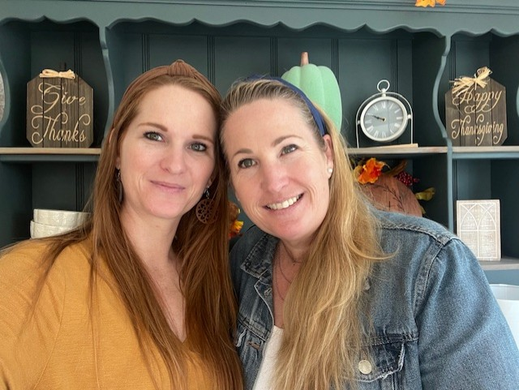

Welcome to Simply Sage – Your Ultimate Destination for Furniture Flipping! Transform Your Space, Transform Your Life.
Are you looking for unique, budget-friendly furniture that reflects your personal style? Do you have old furniture collecting dust that could use a second chance at life? Whether you’re searching for high-quality, one-of-a-kind pieces or you're ready to turn your worn-out furniture into something fresh and fabulous, you’ve come to the right place. At Simply Sage, we specialize in the art of furniture flipping—the process of rescuing pre-loved furniture and transforming it into stunning, functional pieces that bring new life to your home or office. From vintage finds to outdated pieces, we reimagine furniture with creative design, expert craftsmanship, and a passion for sustainability.
What is Furniture Flipping?
Furniture flipping is all about taking second-hand, often discarded, pieces and giving them new life with a combination of creativity, skill, and effort. It involves: Finding hidden gems: Scouring thrift stores, garage sales, and marketplaces for potential pieces. Restoring & Repairing: Sanding, painting, and fixing anything that’s worn, damaged, or outdated. Designing: Re-imagining furniture with new colors, textures, and styles to fit modern tastes. Selling or Reusing: Once restored, the pieces are either sold for a profit, donated, or used in your own home. Whether you're flipping furniture as a hobby, looking to make some extra income, or starting a full-fledged furniture business, we’re here to help you every step of the way.
Why Choose Furniture Flipping?
Eco-Friendly & Sustainable By choosing to flip furniture, you're reducing waste and helping keep quality materials out of landfills. It’s a win for the planet and your home! Creative & Custom Designs Furniture flipping allows you to create one-of-a-kind pieces that match your exact vision. Whether you love vintage or modern styles, flipping gives you total creative freedom. Save Money, Make Money With a little time, skill, and elbow grease, flipping furniture can save you money on your own home decor. Plus, it’s an opportunity to turn a hobby into a profitable business venture. Preserving Craftsmanship Many vintage pieces feature beautiful craftsmanship that’s hard to find in new furniture. Flipping allows you to preserve these timeless works of art while giving them a fresh update.
Ready to Get Started?
Furniture flipping is more than just a craft; it’s a lifestyle. Whether you’re a seasoned pro or just curious about getting started, we’re here to support you along the way. Join Our Community: Connect with other furniture enthusiasts for advice, inspiration, and collaboration. Shop Our Collection: Find high-quality, restored furniture that’s ready to make a statement in your home. Don’t Let Old Furniture Go to Waste. At Simply Sage, we believe that with the right vision and creativity, anything can be turned into something beautiful. Start flipping today and see how you can transform your space—and even your life—one piece at a time. Get in Touch Have questions? Want to learn more about our services, process, or available pieces? Reach out to us today, and let’s make furniture flipping your new favorite thing!